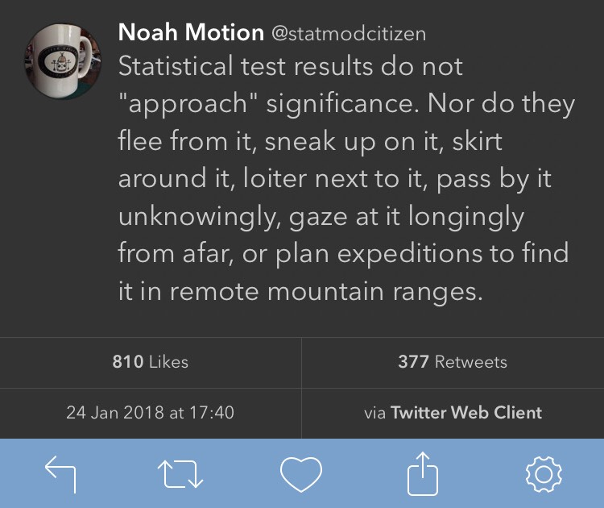

5. Statistical Inference
An Introduction to Inferential Statistics
![]()
- The concept of inferential statistics
- Hypothesis testing
- Probabilities
- Assumptions and parametric statistics
- Normality and the Shapiro-Wilk test
- Homoscedasticity
- None
1 Introduction
We have seen in Chapter 2 and Chapter 3 how to summarise, describe, and visualise our data — these processes form part of descriptive statistics. The next step is the process of conducting inferential statistics.
Inferential statistics is a branch of statistics that focuses on drawing conclusions and making generalisations about a larger population based on the analysis of a smaller, representative sample. This is particularly valuable in research situations where it is impractical, impossible to collect data from every member of a population — i.e. all of biology and ecology. By employing probabilistic reasoning or inferential statistics enable us to estimate population parameters, make predictions, and test hypotheses with a certain level of confidence.
One of the key aspects of inferential statistics is the concept of sampling variability. Since samples are only a subset of the population, they imperfectly represent whole populations, leading to variations in the estimates of population parameters (repeatedly drawing samples at random from a population will result in slightly different values for key statistical parameters, such as the sample mean, variance). Inferential statistics accounts for this variability by providing measures of uncertainty such as confidence intervals and margins of error, which convey the range within which the true population parameter is likely to fall.
Parametric statistics form the foundation of inferential statistics, and they are used to make inferences about population parameters based on sample data. These statistics assume that the data are generated from a specific probability distribution — the normal distribution. An alternative to parametric tests is non-parametric statistics, and we shall hear more about it in Chapter 6.
The most common parametric statistics used in inferential statistics include:
t-tests (Chapter 7) used to determine if there is a significant difference between the means of two groups of continuous dependent (response) variables.
ANOVA (Chapter 8) used to determine if there is a significant difference between the means of three or more groups of continuous variables.
Regression analysis (Chapter 9) used to model the relationship between one or more continuous predictor variables and a continuous response variable.
Pearson correlation (Chapter 10) used to measure the linear association or relationships between two continuous variables.
Chi-squared tests used to determine if there is a significant association between two categorical variables.
These tests typically involve the calculation of a test statistic and the comparison of this value with a critical value and then establishing a p-value to determine whether the results are statistically significant or likely due to chance. These methods are included within a subset of inferential statistics called probabilistic statistics.
Probabilistic and Bayesian statistics are two related but distinct branches of statistics that offer tools for modelling, analysing, and drawing inferences from complex data sets. At their core, both approaches rely on the use of probability theory to quantify uncertainty, variability in data but they differ in their assumptions about the nature of this uncertainty and how it should be modelled.
Probabilistic statistics is a classical approach that assumes that all sources of variability in a data set can be described by a fixed set of probability distributions, such as the normal distribution, the Poisson distribution. These distributions are characterised by a set of parameters such as the mean and standard deviation, that can be estimated from the data. Probabilistic statistics is widely used in fields such as biology, physics, and economics, where the data are often assumed to be generated by a deterministic process with some random noise present. In contrast, Bayesian statistics takes a more flexible approach to modelling uncertainty, allowing for uncertainty in both the parameters of the model, the underlying distribution itself. Bayesian methods are useful when dealing with complex and high-dimensional data sets and with lots of unknowns and assumptions, and have become increasingly popular in fields such as ecology, machine learningin recent years.
2 Hypothesis Testing
Hypothesis testing is a fundamental aspect of the scientific method and is used to evaluate the validity of scientific hypotheses. A hypothesis is a proposed explanation for a phenomenon or observation that can be tested through experimentation or observation. To test a hypothesis, we design experiments, collect data or which we analyse using inferential statistical methods to determine whether the data support or refute the hypothesis.
Two competing hypotheses about the data are set up at the onset of hypothesis testing: a null hypothesis (H0) and an alternative hypothesis (Ha). The null hypothesis typically represents the status quo or a default assumption (a statement of no difference), while the alternative hypothesis represents a new, alternative explanation for the data.
The goal is to make objective and evidence-based conclusions about the validity of the hypothesis, and to determine whether it can be accepted, rejected based on the available evidence. Hypothesis testing is a critical tool for advancing scientific knowledge and understanding or as it allows us to identify the most promising hypotheses and develop more accurate models of the natural world. Effectively, scientific progress can only be made if the null hypothesis is rejected, the alternative hypothesis accepted.
Hypotheses and theories are both important components of the scientific process, but they serve different functions, represent distinct levels of understanding.
A hypothesis is a tentative explanation or proposition for a specific phenomenon, often based on observations, grounded in existing knowledge. It is a testable statement that can be either supported or refuted through further observation and experimentation, and hypothesis testing through the application of inferential statistics. Hypotheses are typically formulated at the beginning of a research study. They guide the design of experiments, the collection of data. Hypotheses help us make predictions and answer specific questions about the phenomena under investigation. If a hypothesis is repeatedly tested and confirmed through various experiments and it may gain credibility and contribute to the development of a theory.
A theory is a well-substantiated explanation for a broad range of observed phenomena that has been consistently supported by a large body of evidence. Theories are more comprehensive and mature than hypotheses, as they integrate, generalise multiple related hypotheses and empirical findings to explain complex phenomena. They are built upon a solid foundation of tested hypotheses and provide a coherent framework that enables us to make accurate predictions and generate new hypotheses, and further advance our understanding of the natural world.
At the heart of many basic scientific inquiries, and hence hypotheses, is the simple question “Is A different from B?” The scientific notation for this question is:
- H0: Group A is not different from Group B
- Ha: Group A is different from Group B
More formally, one would say:
- \(H_{0}: \bar{A} = \bar{B}\) vs. the alternative hypothesis that \(H_{a}: \bar{A} \neq \bar{B}\)
- \(H_{0}: \bar{A} \leq \bar{B}\) vs. the alternative hypothesis that \(H_{a}: \bar{A} > \bar{B}\)
- \(H_{0}: \bar{A} \geq \bar{B}\) vs. the alternative hypothesis that \(H_{a}: \bar{A} < \bar{B}\)
Hypothesis 1 is a two-sided t-test and hypotheses 2 and 3 are one-sided tests. This will make sense once you have studied the material in Chapter 7 about t-tests.
3 Probabilities
The p-value (the significance level, \(\alpha\)) is the probability of finding the observed (or measured) outcome to be more extreme (i.e., very different) than that suggested by the null hypothesis (\(H_{0}\)). Typically, biologists set the p-value at \(\alpha \leq 0.05\) — in other words, the measured outcome of our experiment only has a 1 in 20 chance of being the same as that of the reference (or control) group. So, when the p-value is \(\leq\) 0.05, for example, we say that there is a very good probability that our experimental treatment resulted in an outcome that is very different (we say statistically significantly different) from the measurement obtained from the group to which the treatment had not been applied — in this case we do not accept \(H_{0}\) and by necessity \(H_{a}\) becomes true.
In inferential statistics, when conducting hypothesis testing, we do not “accept”, “prove” the null hypothesis. Instead or we either “reject” or “fail to reject” the null hypothesis based on the evidence provided by our sample data. So, it does not mean the null hypothesis is true, just that there is not enough evidence in your sample to reject it.
The choice of p-value at which we reject \(H_{0}\) is arbitrary and exists by convention only. Traditionally, the 5% cut-off (i.e., less than 1 in 20 chance of being wrong\(p \leq 0.05\)) is used in biology, but sometimes the threshold is set at 1%, 0.1% (0.01 or 0.001 or respectively), particularly in the medical sciences where avoiding false positives, negatives could be a public health concern. However, more and more biologists shy away from the p-value as they argue that it can give a false sense of security.
Statistical tests indicate a statistically significant outcome (the \(p \leq 0.05\)) and we accept the \(H_{a}\), or it does not (\(p \gt 0.05\)) and we do not reject the \(H_{0}\). There is no “almost significant”. It is, or it is not. 
We generally refer to \(p \leq 0.05\) as being statistically significant. Statistically highly significant is seen at as \(p \leq 0.001\). In the first instance there is a less than 1 in 20 chance that our experimental sample is not different from the reference group, and in the second instance there is a less than 1 in a 1000 chance tat they are the same. This says something about the acceptable error rates: there is a better chance the \(H_{0}\) may in fact be falsely accepted or rejected when the p-value is set at 0.05 than at 0.001.
A Type I error is the false rejection of the \(H_{0}\) hypothesis (i.e., in reality we should not be rejecting it, but the p-value suggests that we must). A Type II error, on the other hand, is the false acceptance of the \(H_{0}\) hypothesis (i.e., the p-value suggests we should not reject the \(H_{0}\), but in fact we must). When a statistical test results in a p-value of, say, \(p \leq 0.05\) we would conclude that our experimental sample is statistically different from the reference group, but probabilistically there is a 1 in 20 change that this outcome is incorrect (i.e., the difference was arrived at by random chance only).
The choice of p-value threshold depends on several factors, including the nature of the data, the research question, and the desired level of statistical significance. In medical sciences, where the consequences of false positive, false negative results can have significant implications for patient health or a more stringent threshold is often used. A p-value of 0.001 is commonly used in medical research to minimise the risk of Type I errors (rejecting the null hypothesis when it is actually true) and to ensure a high level of statistical confidence in the results.
In biological sciences, the consequences of false positive, false negative results may be less severe and a p-value of 0.05 is often considered an appropriate threshold for statistical significance. However, it is important to note that the choice of p-value threshold is ultimately subjective, should be based on a careful consideration of the research question and the nature of the data, and the potential consequences of false positive, false negative results.
To conclude, when \(p \gt 0.05\) there is a lack of compelling evidence to suggest that our experiment has had an influential effect of the hypothesised outcome — even if a graphs hints at differences between groups. When \(p \leq 0.05\), however, there is a good probability that the experiment (etc.) has had an effect, and that the effect is likely not due to random chance. In this case we have a statistically significant finding.
4 Assumptions
Irrespective of the kind of statistical test we wish to perform, we have to make a couple of important assumptions that are not guaranteed to be true. In fact, these assumptions are often violated because real data, especially biological data, are messy.
The issue of assumption is an important one, and one that we need to understand well. This is will be the purpose of Chapter 6, where we will learn about how to test the assumptions, and discover what to do when it does.
5 Conclusion
We use inferential statistics to draw conclusions about a population based on a sample of data. By using probability theory and statistical inference, we can make inferences about the characteristics of a larger population with a certain level of confidence. We must always keep the assumptions behind inferential statistics in mind so that we can apply the right statistical test, answer our research question within the limits of what our data can tell us.
In practice, the process works like this:
-
Setting the significance level (\(\alpha\)):
- Before conducting the test, you decide on a significance level, \(\alpha\), which is the probability of rejecting the null hypothesis when it is actually true (Type I error). Common choices for \(\alpha\) are 0.05, 0.01, and 0.10, though the choice is context-dependent.
-
Conducting the test:
- You then compute the test statistic (like a t-statistic, F-statistic, etc.) based on your sample data.
- This test statistic is then compared to a distribution (like the t-distribution for the t-test) to find the p-value.
-
Interpreting the p-value:
- The p-value is the probability of observing a test statistic as extreme as, or more extreme than, the statistic computed from the sample, assuming that the null hypothesis is true.
- If the p-value is less than \(\alpha\) (i.e., below the critical value), then the evidence suggests that the null hypothesis can be rejected in favour of the alternative hypothesis.
- If the p-value is greater than \(\alpha\), you fail to reject the null hypothesis. This does not mean the null hypothesis is true, just that there is not enough evidence in your sample to reject it.
Reuse
Citation
@online{smit,_a._j.2021,
author = {Smit, A. J.,},
title = {5. {Statistical} {Inference}},
date = {2021-01-01},
url = {http://tangledbank.netlify.app/BCB744/basic_stats/05-inference.html},
langid = {en}
}